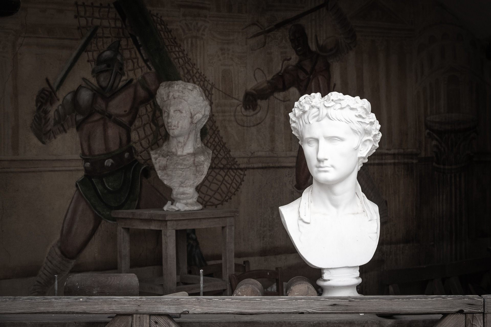
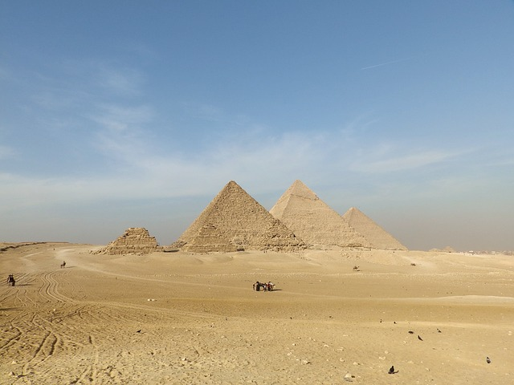
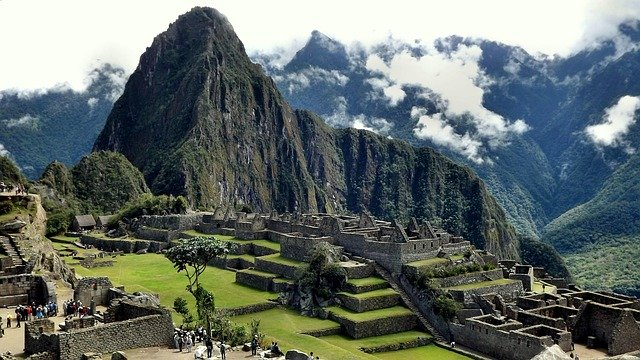

Necrópole de Gizé - Cairo(Egito)

A maior e mais impressionante atração turística do Cairo e de todo o Egito fascina e decepciona ao mesmo tempo.
As pirâmides de Gizé ficam a uma curta (curtíssima) distância dos subúrbios do Cairo. Em um triângulo imaginário, a cidade cerca o complexo por dois lados.
A vista que a Esfinge tem, por exemplo, não é de nenhum deserto de infinitas dunas, mas um amontoado de casas feias e mal cuidadas. Deixe estar. Esqueça a bilheteria caótica, a entrada confusa e os condutores de camelos te aporrinhando sem parar.
As três grandes pirâmides são um símbolo massivo do poder dos faraós da Quarta Dinastia. Imagine que, quando Cleópatra se engraçou com Julio César, estes gigantescos monumentos funerários já tinham 2500 anos. Mais: os cerca de 150 metros da pirâmide de Quéops lhe garantiram o título de estrutura artificial mais alta do mundo por mais de 38 séculos. Simplesmente estupendo.
Apesar de estarem parcialmente deterioradas — por séculos foram usadas como pedreira para construir muitos dos edifícios do Cairo, além de serem vandalizadas e furtadas –, perdendo alguns bons metros de sua altura original e de seu revestimento plano, as vistas aqui encantam os entusiastas e os céticos. Toda a história por trás da construção destas estruturas são um enigma e campo aberto para discussões. Até mesmo o uso de escravos hoje é posta em dúvida.
Além da grande pirâmide, a necrópole de Gizé é formada por outras importantes estruturas. As pirâmides de Miquerinos e Quéfren, a esfinge, diversas tumbas ainda sendo escavadas e o surpreendente museu que abriga a Barca Solar são obrigatórias. É possível adentrar as pirâmides, mas é imprevisível saber quais delas terão acesso liberado pelas autoridades no seu dia de vista. Bilhetes de entrada para o planalto, permissão para fotografias e tíquete de entrada para as pirâmides são vendidas em separado. Não é permitido escalar
Em uma situação normal, visitar o platô de Gizé seria tarefa simples. Bastaria pegar um táxi na estação Giza do metrô ou o ônibus que sai das proximidades do Museu do Cairo. Contudo, os serviços são infrequentes e você nunca sabe qual é o preço correto. Para evitar aborrecimentos e economizar tempo, vale a pena considerar embarcar numa excursão ou negociar um dia de passeios com um taxista recomendado por seu hotel.
Não se esqueça de trazer água, usar boné e passar protetor solar. E um bom óculos de sol também ajuda, pois passa-se boa parte do tempo olhando para o alto.
Tomem nota:
- a Pirâmide de Miquerinos está fechada ao público;
- a Pirâmide de Quéops permite somente 300 visitas diárias.
Machu Picchu - Cordilheira dos Andes(Peru)

Machu Picchu é simplesmente a atração número um do Peru – e talvez da própria América Andina. Desde que a descoberta científica da cidadela inca foi anunciada pelo historiador americano Hiram Bingham em 1911, sua complexa e misteriosa arquitetura encastelada, cravada em um cenário montanhoso dramático, vem atraindo turistas de todo o mundo.
Tanta popularidade levou o destino, uma das sete maravilhas do mundo, a sofrer com o turismo desenfreado e alguns dos preços mais altos do país. Mesmo assim, hordas de turistas desembarcam sem parar nessa antiga cidade inca de pedra, seja pela clássica Trilha Inca ou por trens vindos de Cusco. E motivos não faltam para tamanha determinação.
Machu Picchu, que em língua quéchua significa “montanha velha”, está localizada sobre uma montanha de granito e abriga impressionantes construções erguidas com pesados blocos de rocha. Cercado de enigmas a respeito de sua criação e serventia, o local, declarado pela Unesco como Patrimônio Cultural e Natural da Humanidade, está a 74 quilômetros de Cusco e a 2.350 metros acima do nível do mar.
Para chegar ao local você poderá ir de avião ou trem, confira mais detalhes a baixo:
Avião
Os voos diretos até Lima partindo do Rio de Janeiro (com duração de 5h30 min) e Porto Alegre (5h) são feitos pela Avianca e os partindo de Foz do Iguaçu (com duração de 4h25 min) são feitos pela Latam. Após chegar à Lima é preciso mais uma hora de voo para chegar em Cusco. O trecho Lima–Cusco é operado pelas aéreas Taca Peru, Viva Air, Peruvian Airlines e LCPeru.
Documentação: a página oficial da embaixada brasileira em Lima divulgou no dia 15/01/2019 que o governo peruano passou a exigir o passaporte com validade mínima de 6 meses para entrada e saída do país. Por fim, o órgão recomenda que a validade esteja dentro de 8 meses.
Importante: o aeroporto de Cusco, cercado por montanhas, é um dos mais desafiadores e ingratos para os pilotos da aviação comercial e, não raro, pode fechar devido o mau tempo. Se você comprar o trecho Cusco – Lima separado do trecho de Lima – Brasil na esperança de retornar para a sua cidade no mesmo dia, saiba que há grandes chances de o voo que parte Cusco atrasar ou mesmo ser cancelado devido à intempéries. Caso isso aconteça, será preciso arcar com multas ou até com uma nova passagem para o Brasil. Comprar o bilhete Cusco – Brasil na mesma reserva livra você dessa dor de cabeça porque a aérea é obrigada realocar o passageiro no próximo voo em caso de atrasos.
Trem
A terceira etapa pede que você viaje de Cusco até Águas Calientes (também conhecido como MachuPicchu Pueblo), a última parada antes de chegar na cidade dos Incas. Para chegar até o vilarejo é preciso pegar um trem, que é operado pela Peru Rail (que inclui o luxuoso trem Hiram Bingham) e pela Inca Rail com preços variando de acordo com a categoria escolhida. A viagem dura de duas a três horas.
Site oficial - Aqui

2020 MULTI VIAGENS - TODOS OS DIREITOS RESERVADOS